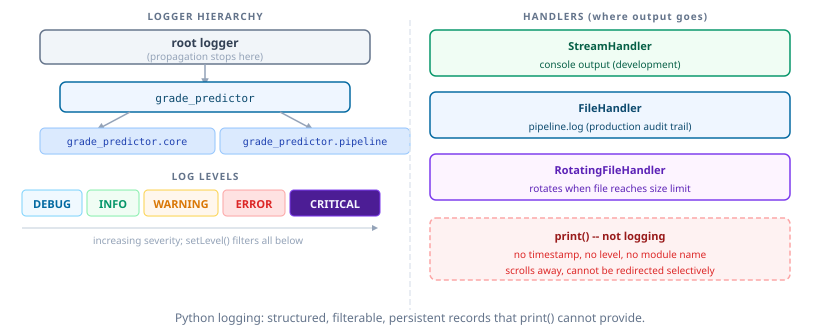

import logging
# basicConfig attaches a StreamHandler to the root logger
logging.basicConfig(level=logging.INFO, format="%(asctime)s %(levelname)s %(message)s")
log = logging.getLogger(__name__)
log.info("Training started")
log.warning("Fold 3 has only 12 samples")
log.debug("This is below INFO threshold: not shown")Logging for ML projects


It is 11 PM. A 12-hour cross-validation run finishes. You open the terminal to check results. There is nothing there, because the window scrolled past the output hours ago. You did not redirect stdout to a file. Fold 3 crashed with a shape mismatch, silently recovered to a default, and corrupted the metric average. You have no record of when it happened, which model it was, or what the stack trace said.
This is the print() problem. It is not that print() is slow or ugly. It is that print() has no:
- Severity: you cannot ask “show me only errors” after the fact
- Routing: you cannot send errors to a file while keeping the console quiet
- Timestamps: you cannot tell which fold took 40 minutes
- Persistence: if the terminal closes, the output is gone
- Silencing: you cannot turn off a dependency’s output without patching its source
Python’s logging module solves all five. You do not need to replace every print() with a log call. You need to understand when you are debugging versus when you are operating, and log accordingly.
The diagram below shows how Python’s logging system is structured: a hierarchy of loggers feeding handlers, each with its own severity threshold, with formatters controlling the output format.

1. Python’s logging hierarchy
Python’s logging system has four objects that work together as one pipeline:
- Logger: the object your code calls (
log.info(...),log.warning(...)). Every logger has a name, typically__name__, which creates a dotted hierarchy:grade_predictor.coreis a child ofgrade_predictor, which is a child of the root logger. - Handler: decides where a log record goes: console, file, HTTP endpoint. A logger can have multiple handlers.
- Formatter: decides how a record looks: plain text, JSON, coloured terminal output.
- Level: a numeric threshold (
DEBUG=10,INFO=20,WARNING=30,ERROR=40,CRITICAL=50). Records below the threshold are discarded.
The key insight is propagation: when grade_predictor.core logs a record, it walks up the hierarchy towards the root logger, passing the record to every handler it encounters. This means:
- The same
log.info("Computing grades")insidegrade_predictor.corecan reach a console handler on the root logger AND a file handler ongrade_predictor, with different formatters on each - A caller can silence
grade_predictor.coreby setting its level toCRITICAL, without touching any code inside the library - A library can opt out of all output by default, leaving every routing decision to the caller
Here is the minimal configuration most tutorials show first:
This works for a script you run yourself. The problem is basicConfig(). It configures the root logger at import time, which means every library in your Python process that uses logging will suddenly emit output through your format. Section 2 explains why library code must never call it.
2. The library/application boundary
The single most important rule in Python logging is the library/application boundary.
A library is any code you publish as a package: grade_predictor, or any pip-installable project. Its job is to be imported and used. It should never decide where its log output goes, because its caller’s environment is unknown. The correct pattern at the library level:
- In
__init__.py, add aNullHandlerto the top-level logger. This silences the “No handler found” warning without emitting any actual output. - In every module, use
logging.getLogger(__name__)to get a logger named after the module’s dotted path. - Never call
logging.basicConfig()anywhere in library code.
An application is code you run: a training script, a notebook, a FastAPI service. It owns the process and decides where logs go. It calls configure() once at startup to attach real handlers.
Here is how grade_predictor would be structured:
import loggingA library registers a NullHandler once at the top-level __init__.py. This silences all output by default. The application decides later whether to show anything:
# grade_predictor/__init__.py (only NullHandler call in the library)
logging.getLogger("grade_predictor").addHandler(logging.NullHandler())Each module creates its own named logger. The name forms a hierarchy (grade_predictor.core is a child of grade_predictor):
# grade_predictor/core.py (every module gets its own named logger)
log = logging.getLogger("grade_predictor.core")The module function logs at different severity levels. Until an application attaches a handler, nothing appears:
def fit(X, y):
log.info("Fitting model on %d samples", len(X))
# ... training logic ...
log.debug("Gradient norm: %.4f", 0.0023) # detail only visible at DEBUG level
log.info("Fit complete")
# Without configure(), NullHandler swallows everything: no output
fit([1, 2, 3], [0, 1, 0]) Common Mistake: Calling basicConfig() inside a library module
Calling logging.basicConfig() inside a library module silently configures the root logger the moment the library is imported. Every other library and application in the same process suddenly emits output through your format, at your level, with no way for the caller to undo it without reaching into your code. This is one of the most common complaints about Python logging in third-party packages. The fix is one line: logging.getLogger(“yourlib”).addHandler(logging.NullHandler()) in init.py, and nothing else.
3. Handlers and formatters
Now we are on the application side. The application calls configure() once. configure() attaches real handlers to the root logger (or to a named logger like grade_predictor) so that all log records from the library flow through.
A useful pattern is two handlers: a StreamHandler for the console with colour and brevity, and a FileHandler for the log file with full detail including timestamps and module names.
The _ColourFormatter below uses ANSI escape codes. It checks whether stdout is a real TTY before applying colour, so that redirected output to a file or CI log stays clean:
import logging
import sys
LEVEL_COLOURS = {
"DEBUG": "\033[36m", # cyan
"INFO": "\033[32m", # green
"WARNING": "\033[33m", # yellow
"ERROR": "\033[31m", # red
"CRITICAL": "\033[35m", # magenta
}
RESET = "\033[0m"
class _ColourFormatter(logging.Formatter):
"""Console formatter: colour level name when stdout is a TTY."""
_is_tty: bool = sys.stdout.isatty()
def format(self, record: logging.LogRecord) -> str:
if self._is_tty:
colour = LEVEL_COLOURS.get(record.levelname, "")
record.levelname = f"{colour}{record.levelname:<8}{RESET}"
else:
record.levelname = f"{record.levelname:<8}"
return super().format(record)
class _PlainFormatter(logging.Formatter):
"""File formatter: full detail, no colour codes."""
pass
def configure(
level: int = logging.INFO,
log_file: str | None = None,
file_level: int = logging.DEBUG,
) -> None:
"""Attach handlers to the root logger. Call once at application startup."""
root = logging.getLogger()
root.setLevel(logging.DEBUG) # let handlers decide their own threshold
# Console handler
console = logging.StreamHandler(sys.stdout)
console.setLevel(level)
console.setFormatter(_ColourFormatter(fmt="%(levelname)s %(name)s: %(message)s"))
root.addHandler(console)
# Optional file handler
if log_file:
fh = logging.FileHandler(log_file)
fh.setLevel(file_level)
fh.setFormatter(
_PlainFormatter(
fmt="%(asctime)s %(levelname)-8s %(name)s %(funcName)s: %(message)s",
datefmt="%Y-%m-%dT%H:%M:%S",
)
)
root.addHandler(fh)Use configure() to set up the application-level root logger with both console and file handlers:
# Reset any existing handlers from the basicConfig call in Sec 1
logging.getLogger().handlers.clear()
configure(level=logging.INFO, log_file="training.log")
log = logging.getLogger("grade_predictor.core")
log.info("Training started")
log.warning("Fold 3 has only 12 samples")
log.debug("Hidden from console (INFO threshold), captured in file")
log.error("Fold 3 failed: shape mismatch (32, 10) vs (32, 8)")INFO grade_predictor.core: Training started
WARNING grade_predictor.core: Fold 3 has only 12 samples
ERROR grade_predictor.core: Fold 3 failed: shape mismatch (32, 10) vs (32, 8) Pro Tip: Set root to DEBUG and let handlers filter
Setting root.setLevel(logging.DEBUG) and applying level thresholds on the individual handlers means you only need one configure() call to achieve: console shows INFO and above, file captures everything from DEBUG upwards. If you set the root level to INFO instead, DEBUG records are discarded before they reach any handler, even the file handler that wanted them. Always set the root to the lowest level any handler needs.
4. Attaching context without touching every log call
Imagine a cross-validation loop. Each fold runs the same fit() function. When something goes wrong, you want every log line inside fold 2 to say fold=2. The naive approach: add fold=2 to every log.info() call inside the loop. This is repetitive and error-prone.
A better approach is a context manager that patches the logger’s filter for the duration of a block. Python’s logging.LogRecord supports an extra dict for exactly this purpose.
LogContext below uses logging.Filter to inject key-value pairs into every record emitted during the with block, without changing a single call site:
from collections.abc import Generator
from contextlib import contextmanager
import logging
from typing import Any
class _ContextFilter(logging.Filter):
"""Injects extra key-value pairs into every record that passes through."""
def __init__(self, **kwargs: Any) -> None:
super().__init__()
self._context = kwargs
def filter(self, record: logging.LogRecord) -> bool:
for key, value in self._context.items():
setattr(record, key, value)
return True
@contextmanager
def log_context(logger: logging.Logger, **kwargs: Any) -> Generator[None, None, None]:
"""Context manager: inject key-value pairs into every log record in the block."""
f = _ContextFilter(**kwargs)
logger.addFilter(f)
try:
yield
finally:
logger.removeFilter(f)
@contextmanager
def log_section(logger: logging.Logger, name: str) -> Generator[None, None, None]:
"""Mark the start and end of a named pipeline stage."""
logger.info("[START] %s", name)
try:
yield
except Exception:
logger.exception("[FAIL] %s", name)
raise
else:
logger.info("[END] %s", name)# Demonstrate LogContext: every log line inside the with-block carries fold and model
logging.getLogger().handlers.clear()
# Use a formatter that shows the extra fields
root = logging.getLogger()
root.setLevel(logging.DEBUG)
handler = logging.StreamHandler()
handler.setFormatter(logging.Formatter("%(levelname)-8s %(name)s [fold=%(fold)s model=%(model)s]: %(message)s"))
root.addHandler(handler)
log = logging.getLogger("grade_predictor.core")
for fold in range(1, 4):
with log_context(log, fold=fold, model="MLP"), log_section(log, f"fold-{fold}"):
log.info("Loading data")
log.info("Fitting model")
log.info("Evaluating metrics")
Activity 1: LogContext in a training loop
Write a function
Write a function
train_fold(fold: int, epochs: int, model_name: str) -> None that simulates training by logging one line per epoch. Wrap the function body in a LogContext so that every log line automatically carries fold, model, and epochs. Call it for folds 1 and 2 with model “LSTM” and confirm the context fields appear in every line.
log = logging.getLogger("grade_predictor.core")
def train_fold(fold: int, epochs: int, model_name: str) -> None:
with LogContext(log, fold=fold, model=model_name, epochs=epochs):
for epoch in range(1, epochs + 1):
log.info("epoch %d complete", epoch)
# TODO: implement train_fold and call it for fold=1 and fold=25. Loguru: less ceremony for your own code
The stdlib approach works, but it is verbose. For experiment scripts that you run yourself, loguru (loguru.readthedocs.io) replaces all of it with a single import and a one-liner sink configuration.
Loguru’s logger is a pre-configured singleton. You call logger.add() to attach sinks (files, functions, external services). You call logger.bind() to attach context. You use @logger.catch to automatically log and suppress exceptions from a function.
Here is the same experiment loop from Section 4, rewritten with loguru:
from loguru import logger
# Remove loguru's default stderr sink, add a file sink and a stdout sink
logger.remove()
logger.add("experiment.log", level="DEBUG", rotation="10 MB")
logger.add(
lambda msg: print(msg, end=""), # custom sink: print to stdout
level="INFO",
format="{time:HH:mm:ss} {level:<8} fold={extra[fold]} model={extra[model]}: {message}",
)
@logger.catch(reraise=False)
def train_fold_loguru(fold: int, model: str = "MLP") -> float:
"""Simulate one fold. @logger.catch logs any exception automatically."""
bound = logger.bind(fold=fold, model=model)
bound.info("Starting fold")
for epoch in range(1, 4):
bound.debug("Epoch {} complete", epoch)
if fold == 2:
raise ValueError("Shape mismatch in fold 2")
bound.info("Fold complete")
return 0.92
for fold_id in range(1, 4):
train_fold_loguru(fold=fold_id)15:31:05 INFO fold=1 model=MLP: Starting fold
15:31:05 INFO fold=1 model=MLP: Fold complete
15:31:05 INFO fold=2 model=MLP: Starting fold
15:31:05 INFO fold=3 model=MLP: Starting fold
15:31:05 INFO fold=3 model=MLP: Fold complete Common Mistake: Using loguru in a library you publish
Loguru’s logger is a global singleton shared across your entire process. If you use it inside a library (grade_predictor, ark, any package you pip-install), your library will emit log output the moment it is imported, in your format, at your level, with no way for the caller to silence it. This is the same problem as calling basicConfig() in a library, but worse because loguru does not integrate with the stdlib propagation chain. Use loguru only in code you run yourself: scripts, notebooks, and applications you own end to end.
6. Structured logging for production
A loguru experiment log is a text file. It is readable by humans and grep. For a FastAPI serving endpoint, that is not enough. An ops team needs to query logs by model_version, correlate a request across services using request_id, and alert on latency_ms > 500. None of these are possible with string logs.
structlog (structlog.readthedocs.io) solves this by treating log records as dicts first and strings second. Every log.info("prediction", model_version="v2", latency_ms=42) produces a JSON line that Datadog, CloudWatch, and Loki can index natively.
The design of structlog separates three concerns:
- Processors: a pipeline of functions that transform the event dict (add timestamps, add log level, call stack info)
- Renderer: the final processor that turns the dict into a string (JSON for production, pretty-printed for development)
- Bound loggers: carry context across calls without re-stating it
import logging
import time
import structlog
# stdlib backend: PrintLoggerFactory has no .name attribute, so add_logger_name
# requires LoggerFactory (wraps logging.Logger which does have .name)
logging.getLogger().handlers.clear()
logging.basicConfig(level=logging.DEBUG, format="%(message)s", force=True)
structlog.configure(
processors=[
structlog.stdlib.add_log_level,
structlog.stdlib.add_logger_name,
structlog.processors.TimeStamper(fmt="iso"),
structlog.processors.StackInfoRenderer(),
structlog.processors.JSONRenderer(),
],
wrapper_class=structlog.stdlib.BoundLogger,
context_class=dict,
logger_factory=structlog.stdlib.LoggerFactory(),
)
slog = structlog.get_logger("prediction_service")
def compute_grade_api(request_id: str, model_version: str, student_id: str) -> dict:
"""Simulate a grading API endpoint. Every log line carries request context."""
bound = slog.bind(request_id=request_id, model_version=model_version, student_id=student_id)
bound.info("grade_start")
t0 = time.perf_counter()
score = 78.5 # placeholder: real logic reads from DB
latency_ms = round((time.perf_counter() - t0) * 1000, 2)
bound.info("grade_complete", score=round(score, 4), latency_ms=latency_ms)
return {"student_id": student_id, "score": score, "model_version": model_version}
compute_grade_api("req-abc123", "grade-predictor-v1", "S0042"){'student_id': 'S0042', 'score': 78.5, 'model_version': 'grade-predictor-v1'} Key Concept: structlog separates processors from renderers
The processors list is a pipeline: each processor receives the event dict, transforms it, and passes it on. The last processor is the renderer. To switch from JSON (production) to pretty-printed console output (development), swap only the last processor: structlog.dev.ConsoleRenderer() instead of structlog.processors.JSONRenderer(). Nothing else in your code changes, because the calling convention (log.info(“event”, key=value)) is identical regardless of output format.
7. Rich handler: the notebook layer
Everything above assumes a terminal or a file. In Jupyter, logging.StreamHandler writes plain text to the notebook’s output cell. There are no colours, no traceback formatting, no syntax highlighting.
RichHandler from the rich library drops into stdlib logging in one line. It renders log records with colour, aligns level names, pretty-prints tracebacks with source context, and respects the notebook’s display environment.
Here is a before/after comparison:
import logging
# Before: plain StreamHandler output in a notebook
logging.getLogger().handlers.clear()
plain_handler = logging.StreamHandler()
plain_handler.setFormatter(logging.Formatter("%(levelname)s %(name)s: %(message)s"))
logging.getLogger().addHandler(plain_handler)
logging.getLogger().setLevel(logging.DEBUG)
log = logging.getLogger("grade_predictor.core")
log.info("plain handler: training started")
log.warning("plain handler: fold 3 has 12 samples")
def _bad_op():
raise ValueError("Shape mismatch (32, 10) vs (32, 8)")
try:
_bad_op()
except ValueError:
log.exception("plain handler: fold 3 failed")Replace StreamHandler with RichHandler for colour output in notebooks:
import logging
from rich.logging import RichHandler
# After: RichHandler: drop-in replacement, one line change
logging.getLogger().handlers.clear()
logging.basicConfig(
level=logging.DEBUG,
format="%(message)s",
datefmt="[%X]",
handlers=[RichHandler(rich_tracebacks=True, markup=True)],
)
log = logging.getLogger("grade_predictor.core")
log.info("rich handler: training started")
log.warning("rich handler: fold 3 has 12 samples")
def _bad_op():
raise ValueError("Shape mismatch (32, 10) vs (32, 8)")
try:
_bad_op()
except ValueError:
log.exception("rich handler: fold 3 failed")[15:31:05] INFO rich handler: training started 4057371647.py:15
WARNING rich handler: fold 3 has 12 samples 4057371647.py:16
ERROR rich handler: fold 3 failed 4057371647.py:26 ╭──────────────────── Traceback (most recent call last) ─────────────────────╮ │ in <module>:24 │ │ │ │ 21 │ │ 22 │ │ 23 try: │ │ ❱ 24 │ _bad_op() │ │ 25 except ValueError: │ │ 26 │ log.exception("rich handler: fold 3 failed") │ │ 27 │ │ │ │ in _bad_op:20 │ │ │ │ 17 │ │ 18 │ │ 19 def _bad_op(): │ │ ❱ 20 │ raise ValueError("Shape mismatch (32, 10) vs (32, 8)") │ │ 21 │ │ 22 │ │ 23 try: │ ╰────────────────────────────────────────────────────────────────────────────╯ ValueError: Shape mismatch (32, 10) vs (32, 8)
Pro Tip: Use RichHandler only in notebooks and scripts, not in library code
RichHandler is a stdlib logging.Handler subclass, so it obeys the library/application boundary perfectly: add it in your configure() call (application side) and never in library code. For notebooks, the simplest setup is logging.basicConfig(handlers=[RichHandler(rich_tracebacks=True)]) at the top of your notebook. This replaces the default handler and gives you pretty output for the rest of the session.
8. One project, four layers
The four tools you have learned are not alternatives. They are layers. A real ML project uses all four, each in its right place:
| Layer | Tool | Rule |
|---|---|---|
Library (grade_predictor, any pip package) |
stdlib + NullHandler | Must not emit output by default |
| Experiment scripts | loguru | Low ceremony, rich context binding |
| Production API / MLOps pipeline | structlog | Structured JSON, traceable |
| Notebooks | Rich handler | Pretty output, zero config |
The one-sentence rule: if you are shipping it, use stdlib; if you are running it, use loguru; if someone else is querying your logs, use structlog.
The library/application boundary from Section 2 is what makes the layers composable. Library code that uses NullHandler and getLogger(__name__) can be imported by any of the three application layers, each of which attaches its own handlers, without any conflict.
Activity 2: four layers in one notebook
In a fresh notebook cell, set up all four layers for a single import of a mock grade_predictor library. The mock library should use NullHandler and getLogger(name). The notebook cell should use RichHandler. Write a separate script string (as a Python string literal) showing how an experiment script would use loguru to import and call the library. Write a second script string showing how a FastAPI endpoint would use structlog. You do not need to run the scripts, just define them clearly as code strings.
# TODO: implement the four-layer demonstrationFurther reading
| Resource | Why it matters |
|---|---|
| Python logging HOWTO | The canonical guide to stdlib logging, including the propagation model and handler configuration |
| Python logging cookbook | Practical patterns: rotating files, multiprocessing, filters, and more |
| loguru documentation | Full reference for sinks, bind(), @catch, and integration with stdlib |
| structlog documentation | Processor pipeline design, stdlib integration, async support, and testing |
| rich logging | RichHandler options: tracebacks, markup, log levels, width |
| Twelve-Factor App: Logs | The production principle behind structured logging: treat logs as event streams, not files |
Summary
| Concept | Key rule |
|---|---|
logging.getLogger(__name__) |
Get a logger named after the module’s dotted path; enables the propagation hierarchy |
NullHandler |
Add once in library __init__.py; silences warnings without emitting output |
basicConfig() |
Never call inside library code; call once at application startup if using stdlib alone |
configure() |
Application-side function that attaches real handlers; call once at startup |
| Root logger level | Set to DEBUG; let individual handlers filter; ensures file handler captures DEBUG even if console shows INFO |
LogContext |
Context manager that injects key-value pairs into every record in a block, without touching call sites |
log_section |
Marks start and end of a named pipeline stage; logs exceptions automatically |
| loguru | Experiment scripts: one import, logger.add() for sinks, logger.bind() for context, @logger.catch for exceptions |
| loguru in libraries | Never: it is a global singleton that leaks into every caller |
| structlog | Production services: processors pipeline transforms event dicts; swap JSON renderer for console renderer without changing call sites |
RichHandler |
Notebooks and CLIs: drop-in stdlib handler with colour, alignment, and rich tracebacks |
| The one-sentence rule | Shipping it: stdlib. Running it: loguru. Someone else queries it: structlog. |
Next: This completes the dev-tools section: Dev Tools. the ML landscape section builds on everything here to train, evaluate, and deploy machine learning modeltterns for ML pipelines, and how to run tests in CI alongside the Quarto render.